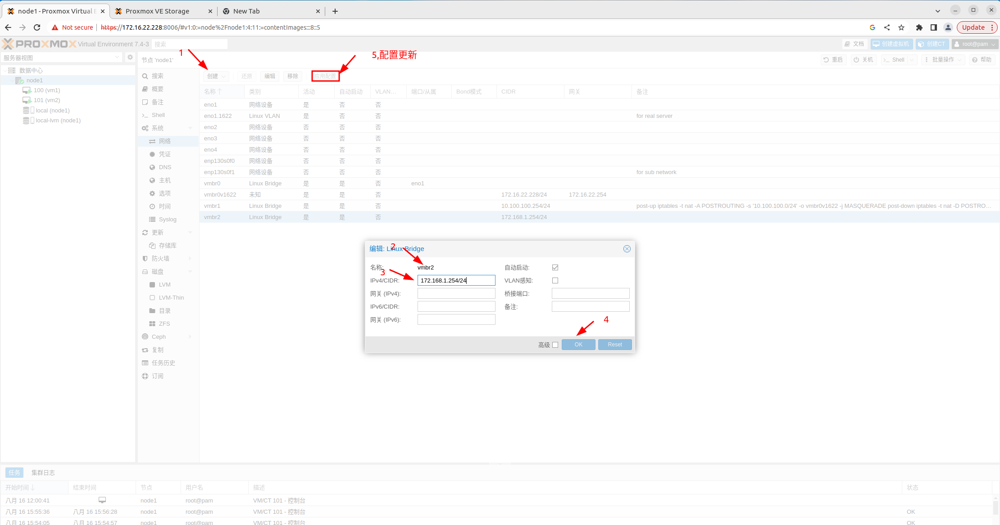

Proxmox
1 . server： Dell PowerEdge R730 2 x Interl(R) Xeon(R) CPU E5-2696 v4 @ 2.20Ghz 416GiB Memory 2 . proxmox镜像 3 . web 登录并配置os javaws viewer.jnlp 进入服务器 将镜像挂载到虚拟介质（virtual Media 选择镜像路径并映射） Next Boot（设置 virtual cd boot） Power 设置 restart ，按F2进入设置bios 正常安装（没有对本服务器做raid设置） 安装过程的ip设置 ip： 172.16.22.228， vlan：1622， dns：10.13.1.1，login： root Inboc@2020 email: chao.long@inboc.net
4 . web 前端登录 172.16.22.228:8006 无法联通，且不能ping任何地址 ip a s 只有vmbr0 修改并重新设置 /etc/network/interfaces
auto lo
iface lo inet loopback
auto eno1.1622 #设置服务器在交换机的vlan
iface eno1.1622 inet static
address 172.16.22.228/24
gateway 172.16.22.254
post-up echo 1 > /proc/sys/net/ipv4/ip_forward
post-up echo 1 > /proc/sys/net/ipv4/conf/eno1/proxy_arp
auto vmbr0
iface vmbr0 inet static
address 172.16.22.50/24
gateway 172.16.22.254
bridge-ports none #桥接的网卡
bridge-stp off
bridge-fd 0 #延迟传输的s
iface eno2 inet manual
iface eno3 inet manual
iface eno4 inet manual
iface enp130s0f0 inet manual
iface enp130s0f1 inet manual
上述配置之后，可以ping 可以ssh，不能登录web ui
5 . 解决web ui登录 实际原因： 系统安装成功，但是pve安装不完整 网卡使用虚拟网卡做连接，并桥接到某物理网卡，同时划分到交换机的vlan中。 参考文件
/etc/network/interfaces
auto lo
iface lo inet loopback
iface eno1 inet manual
iface eno1.1622 inet manual
auto vmbr0
iface vmbr0 inet manual
bridge-ports eno1
bridge-stp off
bridge-fd 0
auto vmbr0v1622
iface vmbr0v1622 inet static
address 172.16.22.228
netmask 255.255.255.0
gateway 172.16.22.254
bridge-ports eno1.1622
iface eno2 inet manual
iface eno3 inet manual
iface eno4 inet manual
iface enp130s0f0 inet manual
iface enp130s0f1 inet manual
6 . 设置虚拟机子网，基于网络配置以上内容继续添加 6.1 宿主机添加子网
auto vmbr1
iface vmbr1 inet static
address 10.0.0.254
netmask 255.255.255.0
bridge_ports none
bridge_stp off
bridge_fd 0
post-up echo 1 > /proc/sys/net/ipv4/ip_forward
post-up iptables -t nat -A POSTROUTING -s '10.100.100.0/24' -o vmbr0.1622 -j MASQUERADE
post-down iptables -t nat -D POSTROUTING -s '10.100.100.0/24' -o vmbr0.1622 -j MASQUERADE
6.1.1 在UI界面实现，新建linux bridge 
6 .2 虚拟机设置 在UI 将目标虚拟机选择网络，加入该子网段，并设置网络
ip a a 10.100.100.2/24 dev ens18
ip route add default via 10.100.100.254
/etc/resolv.conf
nameserver 10.13.1.1
6.3 不同子网互通 或许应该是先创建vlan，然后使用其中的虚拟网络